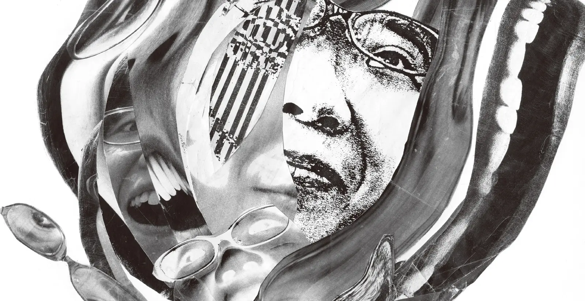
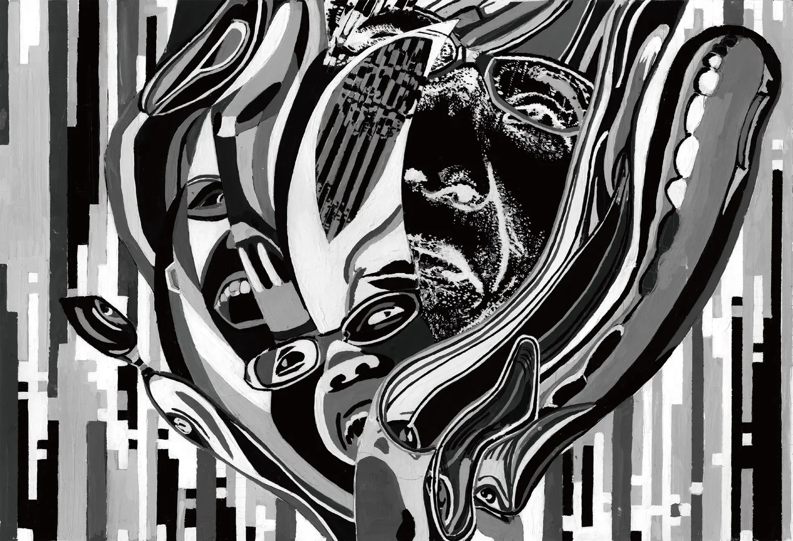
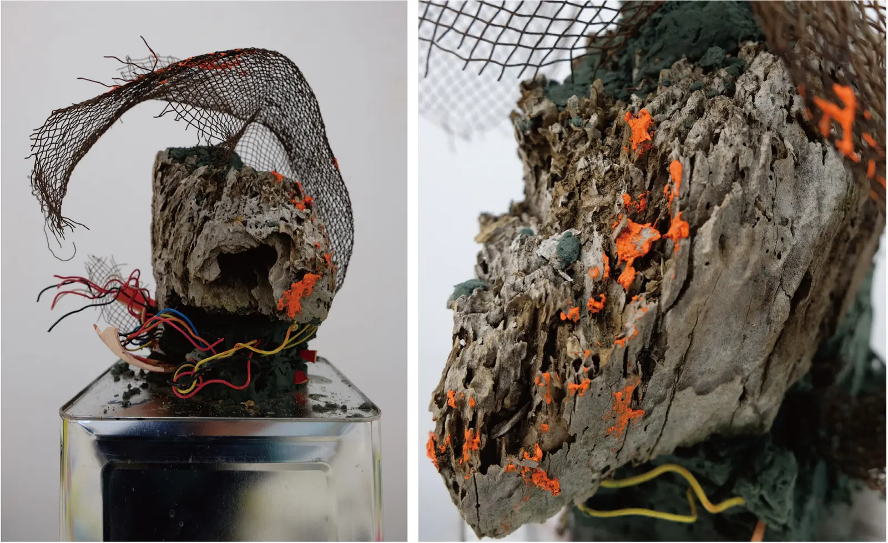
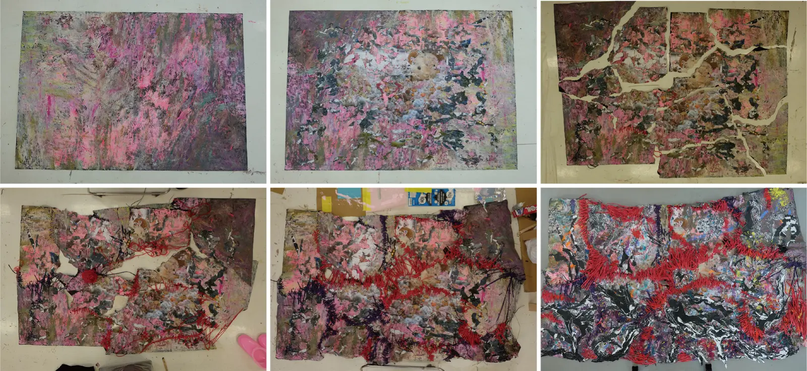

ヴィジュアル表現



作品概要
写真を切り取り、組み合わせることで一つのイメージを再構成。その後、モノクロからカラーへと着彩を展開しました。
技法コラージュ / アクリル絵具素材写真 / アクリル絵具形態平面作品制作方法切り取り / 再構成 / 着彩
IKERU


作品概要
異なる素材の形や質感を生かしながら組み上げた立体作品。見る角度によって変化する輪郭と、素材同士の関係を探りました。
技法異素材による構成素材石 / 金網 / 糸 / ほか形態立体作品制作方法組み合わせ / 構成
軋轢


作品概要
素材を重ね、縫い、形を変えながら制作した立体作品。制作の痕跡を残し、異なる要素がぶつかり合う状態を一つの形にまとめました。
技法縫製 / 異素材による構成素材布 / 糸 / 異素材形態立体作品制作方法重ねる / 縫う / 変形